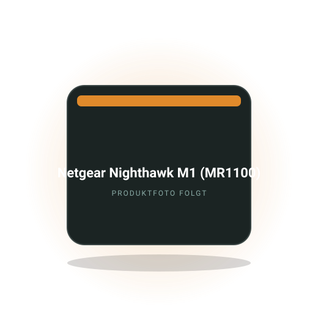
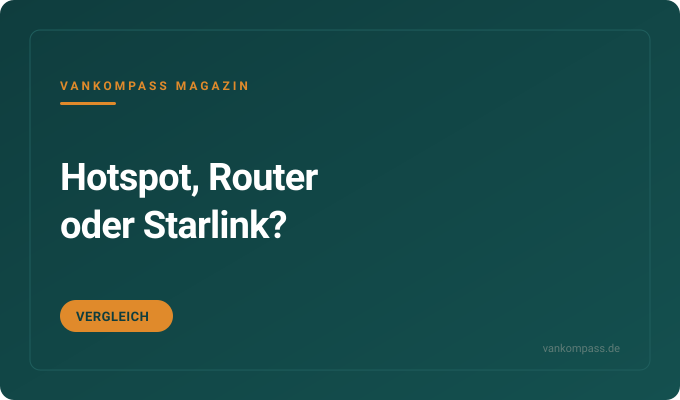
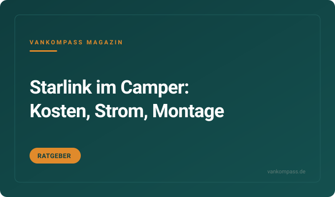

Vergleich
LTE und 5G Router im Wohnmobil: Fritzbox, Netgear und Teltonika im Vergleich
Fritzbox 6850 und 6860 5G, Netgear Nighthawk M3 und Teltonika RUTX50 im Feldtest in Kastenwagen und GFK-Wohnmobil. Fakten von camperhelp.
Bereich
Wie du im Camper stabil online bist: Hotspot oder Router, Außenantenne, 5G, Starlink und passende Tarife für Deutschland und Europa. Ratgeber, Vergleiche und eine Kaufempfehlung fürs mobile Arbeiten.

Redaktions-Tipp
Der mobile LTE-Router mit Akku, der ohne Einbau im Van läuft und sich bei Bedarf an eine Außenantenne hängen lässt.
Warum wir es empfehlen: Er funktioniert ohne Verkabelung, läuft Stunden aus dem eigenen Akku und hat Anschlüsse für eine Dachantenne, falls der Empfang am Platz dünn wird. Für Serien-Camper ohne Einbau und Selbstausbauer gleichermaßen brauchbar.
Preis-Rangeca. 150 bis 250 €Stand Oktober 2026
Bei Amazon ansehenAffiliate-Link *Älteres, aber bewährtes Modell. Preis bleibt für dich gleich.
Kostenlos als PDF
Strom, Schlafen, Küche, Sanitär, Sicherheit, Werkzeug. Zum Abhaken vor jeder Fahrt, damit du nie wieder ohne Ladekabel, Wasserschlauch oder Keil losfährst.
Fritzbox 6850 und 6860 5G, Netgear Nighthawk M3 und Teltonika RUTX50 im Feldtest in Kastenwagen und GFK-Wohnmobil. Fakten von camperhelp.
1,5 kg, Router integriert, knapp 500 Mbit/s in der Spitze während der Fahrt und ein USB-C-Kabel zum Selberbauen. Alle Fakten von fan 4 van.

Was die drei Wege kosten, wann der Hotspot reicht und ab wann sich Router, Außenantenne oder Satellit lohnen.
Wie viel eine Antenne wirklich bringt, welche Bauformen es gibt und wie du sie ohne Bohren an Van und Bus befestigst.

Was das Satelliten-Internet im Monat kostet, wie viel Watt die Antenne zieht und wie sie auf Aufstelldach und Hochdach passt.
Welche Tarife unbegrenztes Volumen bieten, wo EU-Roaming Grenzen hat und wie du mit zwei SIM-Karten Funklöcher überbrückst.
Die Fragen, die am häufigsten gesucht werden. Ausführlich beantwortet, mit Zahlen, Rechenwegen und den Fehlern, die du dir sparen kannst.
Internet im Camper bekommst du auf drei Wegen: über den Hotspot deines Handys, über einen mobilen LTE- oder 5G-Router mit eigener SIM-Karte und bei Bedarf Außenantenne, oder über Satellit mit Starlink. Für die meisten Urlauber reicht der Hotspot, für Homeoffice im Van ist ein Router mit Antenne der Standard.
Der Hotspot kostet nichts extra, zieht aber den Handy-Akku leer und hängt vom Empfang am Standort ab. Ein mobiler Router für ca. 100 bis 400 Euro versorgt mehrere Geräte, hat meist bessere Empfangsleistung und Anschlüsse für eine Antenne, die in Randlagen den Unterschied zwischen einem und drei Balken macht. Starlink kostet in der Hardware ca. 300 bis 500 Euro und im Monat ca. 50 bis 100 Euro, funktioniert aber auch dort, wo kein Mast steht, und braucht freie Sicht zum Himmel.
Häufiger Fehler: Teure Hardware kaufen, bevor der Tarif geklärt ist. Erst prüfen, welches Netz auf deinen Routen gut ausgebaut ist, dann den Router zum Tarif wählen. Eine zweite SIM in einem anderen Netz überbrückt viele Funklöcher günstiger als jede Antenne. Zum Vergleich Hotspot, Router oder Starlink
Für das Wohnmobil eignen sich mobile Router mit Akku und Antennenanschlüssen für ca. 150 bis 400 Euro, wenn du ohne Einbau bleiben willst, oder fest verbaute 12-Volt-Router mit Dachantenne für ca. 300 bis 800 Euro, wenn du dauerhaft unterwegs arbeitest. 5G lohnt sich vor allem in Deutschland und Westeuropa, in Randlagen zählt LTE-Empfang mehr.
Worauf es ankommt: Erstens die Modemklasse, denn höhere LTE-Kategorien bündeln mehrere Frequenzbänder und holen bei schlechtem Empfang mehr heraus. Zweitens Anschlüsse für externe Antennen, meist als TS-9 oder SMA. Drittens die Stromversorgung: Akku-Router laden per USB, Einbau-Router laufen direkt an 12 Volt und ziehen 5 bis 15 Watt. Viertens die Anzahl gleichzeitiger WLAN-Geräte, bei Familien schnell zehn und mehr.
Oft vergessen: Der Router gehört ans Fenster oder unters Dach, nicht in den Schrank aus Metall. Und ein Router mit WLAN-Repeater-Funktion nutzt das Campingplatz-WLAN und spart Datenvolumen, wenn der Platz eine brauchbare Verbindung bietet.
Ja, eine Außenantenne bringt mehr Empfang, vor allem an Orten mit schwachem Signal: Das Blech des Fahrzeugs schirmt stark ab, und eine Antenne auf dem Dach umgeht das. In Gegenden mit ohnehin gutem Empfang ist der Unterschied dagegen kaum messbar.
Dachantennen mit Verschraubung oder Klebesockel kosten ca. 80 bis 300 Euro und liefern die stabilste Verbindung. Magnetfußantennen für ca. 30 bis 100 Euro lassen sich zum Fahren abnehmen und eignen sich für Aufstelldach-Vans, bei denen oben kein Platz ist. Saugnapf-Antennen an der Scheibe sind die günstigste Lösung, bringen aber am wenigsten. Entscheidend ist ein Router mit zwei Antennenanschlüssen, denn LTE und 5G nutzen zwei Antennen gleichzeitig. Kabellänge kurz halten, jedes Meter kostet Signal.
Typischer Fehler: Antenne kaufen, aber Router ohne Anschluss. Vorher prüfen, ob der Router TS-9- oder SMA-Buchsen hat, und die passenden Adapter mitbestellen. Bei Vans mit Aufstelldach ist die Montage auf der festen Dachkante oder am Heck sinnvoller als auf dem beweglichen Dach. Zum Ratgeber Außenantenne am Camper
Starlink lohnt sich im Wohnmobil, wenn du regelmäßig abseits von Mobilfunk stehst, auf stabile Verbindung für Arbeit angewiesen bist oder monatelang durch Länder mit teurem Roaming reist. Für Wochenendfahrten in Deutschland ist ein LTE-Router mit guter SIM günstiger und einfacher.
Die Hardware kostet ca. 300 bis 500 Euro, der mobile Tarif je nach Datenpaket ca. 50 bis 100 Euro im Monat und lässt sich pausieren. Die Antenne zieht im Betrieb etwa 30 bis 60 Watt, also 700 bis 1500 Wattstunden an einem Tag im Dauerbetrieb. Das ist für kleine Powerstations zu viel und braucht eine ordentliche Bordbatterie mit Solar. Freie Sicht zum Himmel ist Pflicht, unter Bäumen oder in engen Tälern bricht die Verbindung ab. Die Antenne wird auf dem Dach oder auf einem Stativ neben dem Fahrzeug aufgestellt.
Praxis: Viele kombinieren Starlink mit einer SIM-Karte und nutzen den Satelliten nur, wenn das Mobilfunknetz fehlt. Den Tarif in Reisepausen pausieren, sonst zahlst du für Monate in der Garage. Zum Ratgeber Starlink im Camper
Für Navigation, Nachrichten und abends eine Serie brauchst du im Camper etwa 30 bis 60 Gigabyte im Monat. Mit täglichem Streaming in HD, Videokonferenzen und Cloud-Backups liegt der Bedarf bei 100 bis 300 Gigabyte. Dauerreisende mit Homeoffice landen oft bei unbegrenzten Tarifen.
Zum Rechnen: Eine Stunde Video in HD verbraucht etwa 1 bis 3 Gigabyte, in niedriger Auflösung deutlich weniger. Eine Stunde Videokonferenz liegt bei 0,5 bis 1,5 Gigabyte. Musikstreaming braucht etwa 50 bis 150 Megabyte pro Stunde, Navigation mit Online-Karten einige hundert Megabyte am Tag. Betriebssystem-Updates, Fotos in die Cloud und Spiele-Downloads kommen oft unbemerkt dazu und sprengen den Monat.
Tipps: Offline-Karten vor der Reise laden, Videoqualität in den Apps begrenzen, automatische Backups auf WLAN beschränken. Und einmal im Monat in der Router-App den Verbrauch pro Gerät ansehen, dann weißt du, wer das Volumen frisst. Zum Rechenbeispiel Datenverbrauch im Camper
Für Camper in Europa eignen sich Tarife mit hohem oder unbegrenztem Datenvolumen, bei denen das EU-Roaming mindestens 30 bis 50 Gigabyte im Monat erlaubt. Unbegrenzte deutsche Tarife sind im EU-Ausland meist auf eine Fair-Use-Grenze gedeckelt, die beim Tarif klar ausgewiesen sein muss.
Innerhalb der EU gilt Roaming wie zu Hause, allerdings mit Grenzen: Wer monatelang im Ausland bleibt, kann nach einigen Monaten Aufschläge zahlen, und unbegrenztes Volumen wird im Ausland auf ein festes Kontingent reduziert. Außerhalb der EU, also Schweiz, Norwegen je nach Tarif, Großbritannien, Balkan und Türkei, gelten eigene Preise. Dort sind lokale Prepaid-SIMs oder eSIM-Anbieter für Reisende oft günstiger. Zwei SIM-Karten in verschiedenen Netzen erhöhen die Chance auf Empfang spürbar.
Oft vergessen: Prepaid-Karten verfallen, wenn sie nicht genutzt werden, und manche Tarife erlauben keinen Hotspot oder Router-Betrieb. Vor der Reise die Bedingungen lesen und die Datenwarnung im Router aktivieren. Zum Vergleich Datentarife für den Camper
Ja, Homeoffice im Camper funktioniert, wenn drei Dinge stimmen: stabiles Internet über Router und Antenne, genug Strom für Laptop und Router über den Tag und ein Arbeitsplatz, an dem du mehrere Stunden aufrecht sitzen kannst. Fehlt eines davon, wird aus dem Traum schnell ein Nackenschmerz mit abgebrochener Videokonferenz.
Strom: Ein Laptop zieht 30 bis 70 Watt, Router und Monitor zusammen 10 bis 30 Watt, ein Arbeitstag liegt also bei 300 bis 700 Wattstunden. Das schafft eine 1-kWh-Powerstation knapp, mit Solar auf dem Dach komfortabel. Internet: Für Videokonferenzen brauchst du stabil 5 bis 10 Megabit pro Sekunde in beide Richtungen, das liefert LTE bei gutem Empfang, bei schlechtem hilft die Außenantenne. Platz: Sitzgruppe mit drehbaren Vordersitzen ist der übliche Arbeitsplatz, der Tisch sollte 70 Zentimeter hoch sein.
Praxis: Standort nach Empfang wählen, nicht nach Aussicht. Laptop auf einen Ständer stellen und externe Tastatur nutzen. Und einen Zeitpuffer für die Suche nach einem Platz mit Netz einplanen. Zum Praxisbeitrag Homeoffice im Camper
Noch nicht geholt?
120 Punkte nach Bereichen sortiert. Dazu neue Video-Tests und Ratgeber, sobald sie online sind.
Powerstations, Bordbatterien, Ladebooster, Verbrauch.
›Faltpanels, Dachmodule, Laderegler, Ertrag, Montage.
›Matratzen, Topper, Froli, Aufstelldach, Kälte von unten.
›Campingtoilette, Trenntoilette, Dusche, Entsorgung, Hygiene.
›Kühlbox, Kocher, Induktion, Geschirr, Stromverbrauch.
›Frischwasser, Tankhygiene, Filter, Pumpen, Winterfest.
›